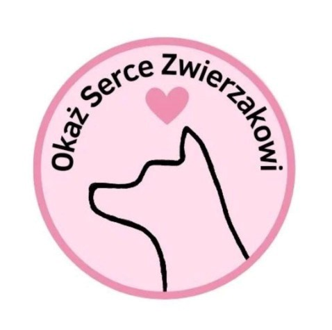

Dziewczyny z Liceum Ogólnokształcącego im. Stefana Żeromskiego w Bartoszycach postanowiły wsiąść udział w projekcie Zwolnieni Z Teorii pod hasłem ,,Okaż serce zwierzakowi" w którym uświadomiły że warto pomagać zwierzętom z pobliskiej ,,Fundacji Marzenia Niechcianych Zwierząt " w Sędławkach. To dzięki waszym hojnym sercom łączna suma całej zbiórki wyniosła 4363zł. Dziękujemy!